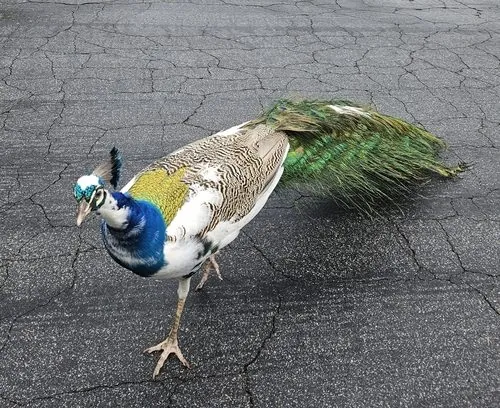

鸟类 · 动物界
蓝孔雀 Pavo cristatus

原产于南亚的著名观赏鸟，雄鸟颈部呈蓝宝石光泽、尾屏布满眼斑，是印度国鸟，世界各地广泛饲养。
- 分类
- 门脊索动物门纲鸟纲目鸡形目科雉科属孔雀属
- 栖息环境
- 南亚的疏林、灌丛、农田边缘与村庄附近，喜在地面和低枝上活动
- 地理分布
- 原产印度、巴基斯坦、斯里兰卡、尼泊尔，现作为观赏鸟遍布世界各地
- 保护级别
- IUCN 无危（LC）；非中国原产物种，中国境内多为人工饲养种群
物种志
蓝孔雀雄鸟体长含尾屏约 180–230 cm，体重 4–6 kg，颈部、胸部和腹部为鲜艳的宝蓝色，羽毛边缘带铜色光泽。头顶的冠羽展开成小扇状，眼周和脸颊有白色斑纹。繁殖期雄鸟拖曳着由约 150 根尾上覆羽组成的长尾屏，每根末端都有一个蓝绿相间的眼状斑。雌鸟体色以灰褐、暗绿为主，没有长尾屏。
蓝孔雀原产于印度、巴基斯坦、斯里兰卡和尼泊尔等南亚地区，栖息于疏林、灌丛和农田边缘，常靠近人类村落。它们是杂食性鸟类，吃种子、果实、昆虫、蜥蜴甚至小蛇。繁殖期雄鸟会同时向多只雌鸟炫耀，开屏并抖动尾羽发出沙沙声；每窝产卵 4–8 枚，孵化约 28 天。蓝孔雀被印度定为国鸟并受法律保护，如今全球动物园和庭院中都有大量人工种群，世界自然保护联盟将其评为无危。
形态与习性
- 食性种子、果实、昆虫、蜥蜴和小蛇
- 体长含尾屏约 180–230 cm
- 体重雄鸟 4–6 kg，雌鸟 2.7–4 kg
- 寿命野外约 15–20 年，圈养可超过 20 年
- 繁殖每窝产卵 4–8 枚，孵化约 28 天
- 开屏尾屏约 150 根尾上覆羽，末端具眼状斑
趣味知识
- 蓝孔雀是印度国鸟，印度法律禁止捕猎和买卖野生蓝孔雀。
- 尾屏上大量眼斑会让天敌产生被许多双眼睛同时盯住的错觉。
- 雄鸟开屏时还会抖动尾羽发出沙沙声，并跳起求偶舞步。
- 蓝孔雀雏鸟出壳后很快就能行走，但要在母亲身边生活数月才独立。